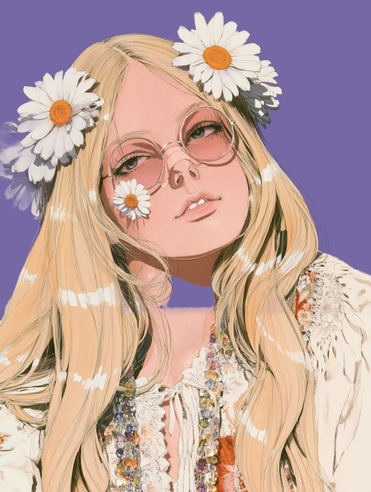
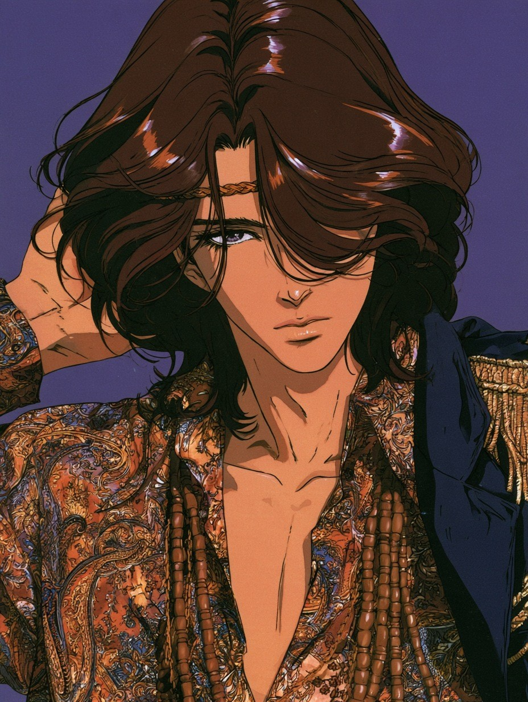
Eighteen years back,꽃을 꽂은 여름
이번에는 18년 전으로 갔다. 1967년 여름의 샌프란시스코. 헤이트 거리와 애시베리 거리가 만나는 작은 동네에 젊은 사람들이 몰려들고 있다.
옷은 가볍고, 무늬는 많다. 페이즐리 셔츠는 단추를 채우지 않는다. 목에는 구슬을 여러 줄 걸고 머리에는 꽃을 꽂는다. 신발은 벗는 일이 많다.
이번 호는 한 남자의 하루를 아침부터 자정까지 따라갔고, 한 여자의 하루를 한낮부터 밤까지 따라갔다. 같은 얼굴이 시간마다 옷과 머리를 바꾼다. 가운데에는 이 도시의 공연 포스터를 한 장 접어 넣었다.
같은 사람이 아침과 밤에
전혀 다른 옷을 입는다.
— ÉPOQUE 편집부, 1985년 서울
여섯 장면 — 아침의 침실에서 자정의 무대까지
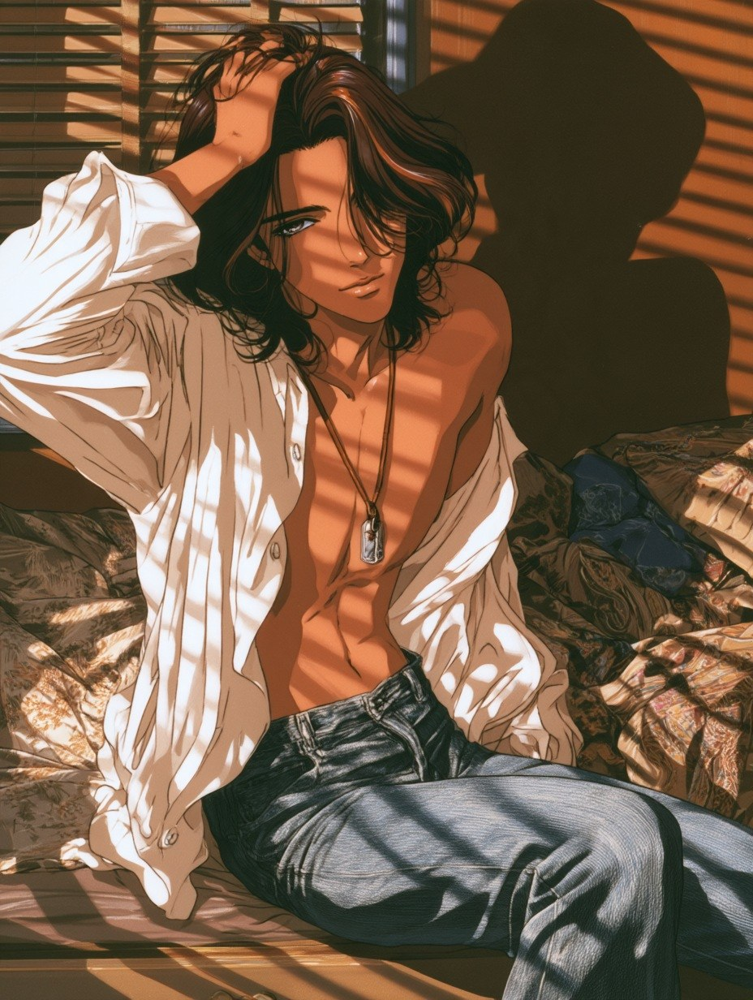
블라인드 사이의 아침
나무 블라인드 사이로 아침 햇빛이 들어와 방 안에 줄을 긋는다. 그는 방금 일어났다. 침대 가에 기대앉아 한 손으로 머리를 쓸어 올린다.
흰 면 셔츠는 단추를 하나도 채우지 않았다. 목에는 가죽 끈에 은 펜던트 하나. 바지는 물 빠진 청바지다. 표지에서 두른 머리띠는 아직 하지 않았다.
- SHIRT
- 풀어 헤친 흰 면 셔츠
- NECK
- 가죽 끈과 은 펜던트
- JEANS
- 물 빠진 청바지
- HAIR
- 빗지 않은 갈색 웨이브
벽을 다 덮은 소용돌이
헤이트 거리의 포스터 가게. 벽은 주황, 분홍, 초록 소용돌이로 빈틈없이 덮였다. 그는 계산대에 올라앉아 포스터 한 장을 만다.
남색과 흰색 줄무늬 티셔츠에 갈색 코듀로이 재킷. 소매는 걷어 올렸다. 바지는 통이 좁은 검은색이고 허리에 가는 사슬을 늘어뜨렸다.
- JACKET
- 소매를 걷은 갈색 코듀로이
- TOP
- 남색·흰색 줄무늬 티셔츠
- TROUSERS
- 통 좁은 검은 바지
- DETAIL
- 허리에 늘어뜨린 가는 사슬
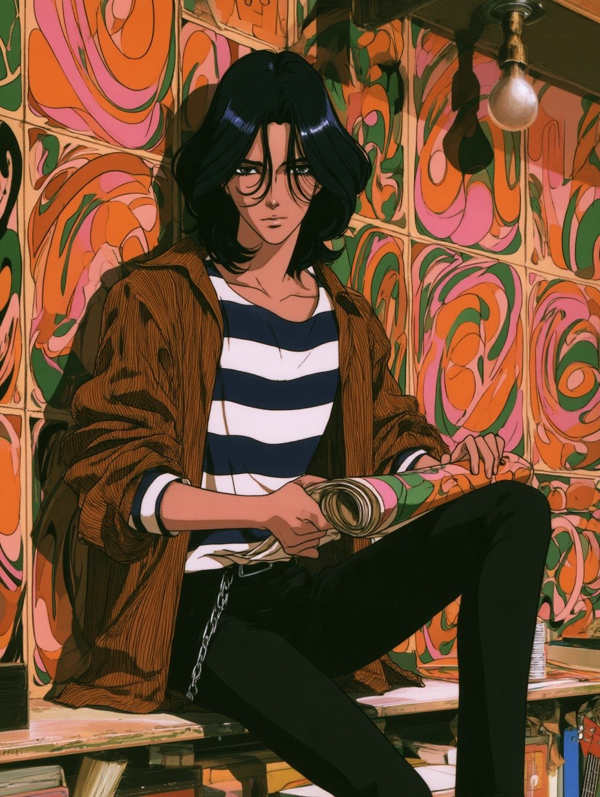
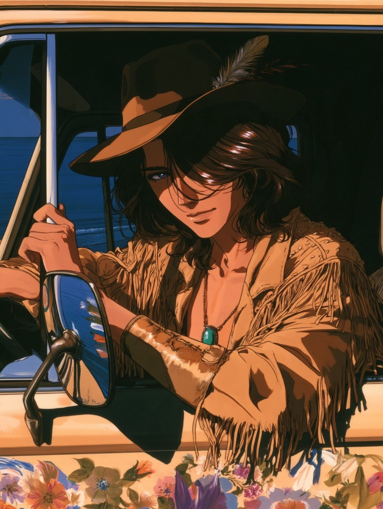
모자챙 아래의 눈
차체에 꽃을 그려 넣은 승합차가 바닷가 도로에 서 있다. 그는 운전석에서 한 팔을 창틀에 걸치고 이쪽을 본다. 모자챙 그늘이 눈을 반쯤 가린다.
챙 넓은 갈색 펠트 모자에 깃털 하나. 술이 길게 달린 스웨이드 재킷을 맨몸에 걸쳤다. 목에는 터키석, 손목에는 넓은 가죽 띠.
- HAT
- 깃털을 꽂은 갈색 펠트 모자
- JACKET
- 술 달린 스웨이드 재킷
- NECK
- 터키석 목걸이
- WRIST
- 넓은 가죽 손목 띠
해를 등지고 물에서 나오다
수평선에 해가 걸렸다. 그는 물에서 걸어 나오며 두 손으로 젖은 머리를 뒤로 넘긴다. 어깨와 팔 가장자리에 빛이 테를 두른다.
재킷은 풀어 헤쳤고 가슴에는 조개 목걸이가 걸려 있다. 흰 바지는 무릎까지 걷었다. 머리는 바닷물에 젖어 뒤로 붙었다.
- JACKET
- 풀어 헤친 남색 재킷
- NECK
- 조개 목걸이
- TROUSERS
- 걷어 올린 흰 바지
- HAIR
- 젖어서 넘긴 머리
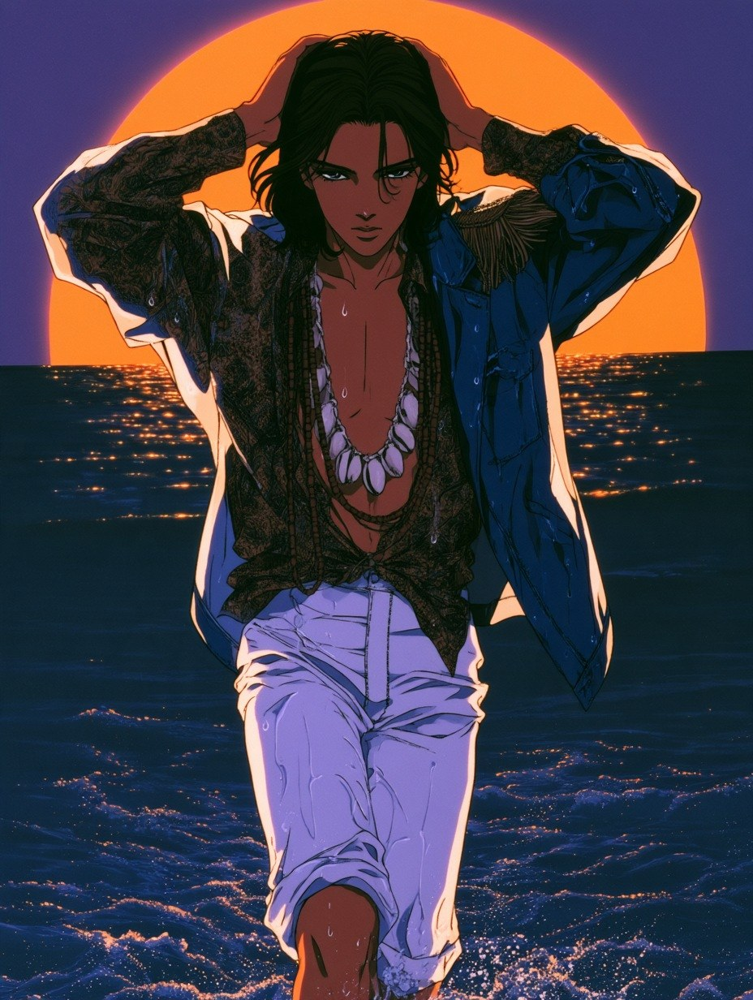
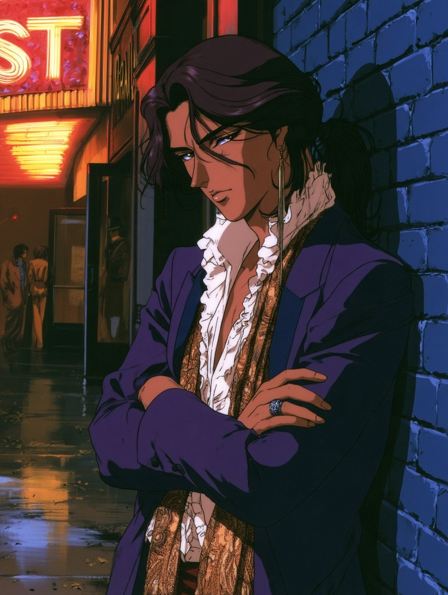
보라 벨벳과 네온
무도장 앞, 비에 젖은 길에 네온이 비친다. 그는 벽돌 벽에 어깨를 기대고 팔짱을 꼈다. 얼굴 한쪽은 붉은 빛, 한쪽은 푸른 그늘이다.
밤에는 머리를 뒤로 묶고 벨벳을 입는다. 보라색 재킷 안에 가슴 장식이 겹겹이 달린 흰 셔츠, 목에는 금빛 페이즐리 스카프. 손가락에는 은반지 하나.
- JACKET
- 보라색 벨벳 재킷
- SHIRT
- 가슴 장식이 달린 흰 셔츠
- SCARF
- 금빛 페이즐리 실크
- HAIR
- 뒤로 묶은 머리
빛이 얼굴 위를 지나간다
무대는 어둡고, 벽에 쏜 색 빛만 움직인다. 분홍과 청록 줄기가 그의 얼굴과 가슴을 가로지른다. 그는 고개를 젖히고 눈을 감은 채 기타를 친다.
표지에서 입은 그 재킷이다. 금술 견장이 달린 남색 군악대 재킷을 맨몸에 걸쳤다. 가죽 머리띠 아래로 땀에 젖은 머리가 목에 붙는다.
- JACKET
- 금술 견장의 남색 군악대 재킷
- NECK
- 긴 나무 구슬 목걸이
- HEAD
- 땋은 가죽 머리띠
- INSTRUMENT
- 전기 기타
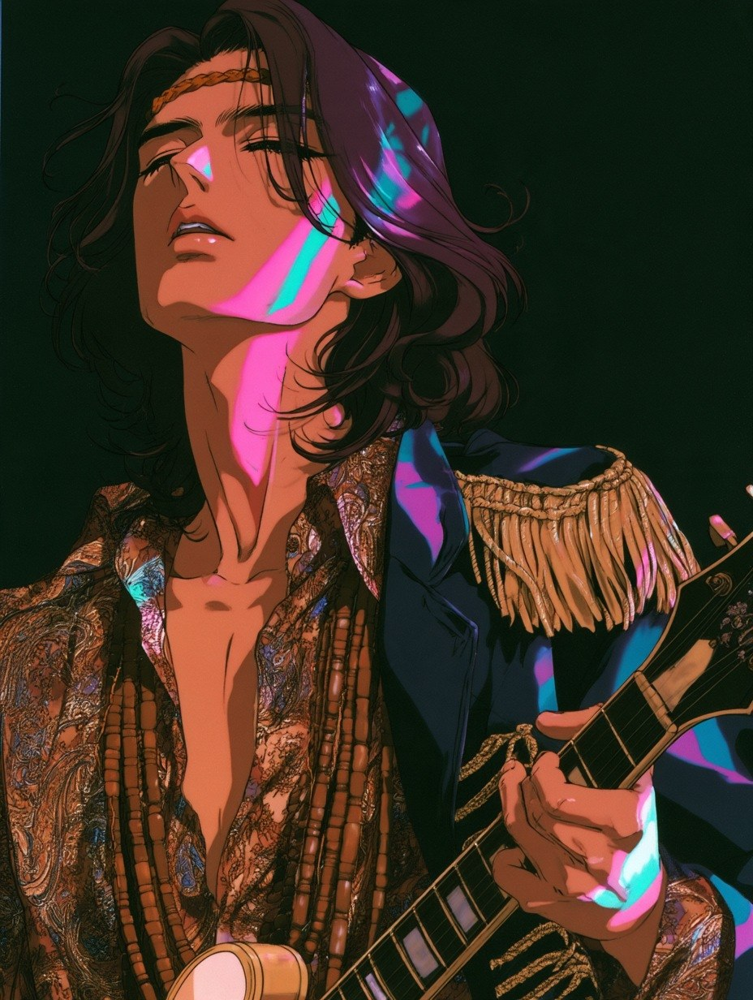
1967
이날 골든게이트 공원 폴로 경기장에 2만 명이 넘는 사람이 모였다. 무엇을 하러 모인 것이 아니라 그냥 함께 있으러 모였다. 그해 여름의 예고편이었다.
봄이 되자 동네 사람들이 다가올 여름에 이름을 붙였다. 그리고 여름, 이 작은 동네에 많게는 10만 명의 젊은이가 찾아왔다.
그해
이 동네에서는
- 1.14골든게이트 공원 모임, 2만 명 이상
- Spring여름에 붙일 이름이 정해짐
- Summer많게는 10만 명이 헤이트애시베리로
1967two nights
읽기 어렵게
쓴 글씨
이 도시의 공연 포스터는 멀리서 보면 무늬이고, 가까이 가야 글자다. 이번 호에 한 장을 접어 넣었다. 밴드도 무도장도 편집부가 지어냈다.
- 글자가 물결친다반듯한 줄이 없다. 글자는 곡선을 따라 흐르고, 빈자리를 남기지 않는다.
- 부딪치는 색을 붙인다주황 옆에 분홍, 노랑 옆에 보라. 눈이 떨릴 만큼 가까이 붙인다.
- 가운데에서 퍼져 나간다동그라미가 한가운데서 바깥으로 번진다. 무도장 벽에 쏘는 빛과 같은 모양이다.
다섯 장면 — 한낮의 공원에서 밤의 무도장까지
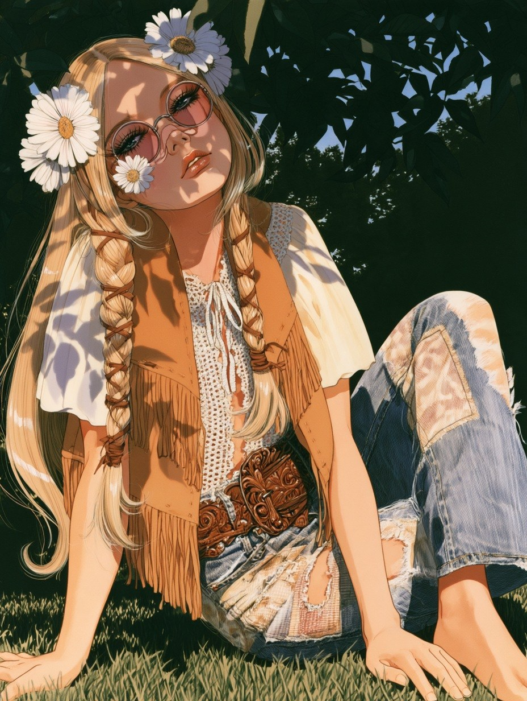
나뭇잎 그림자를 입고
한낮의 공원. 나뭇가지 사이로 든 햇빛이 얼굴과 옷 위에 잎 모양 그림자를 떨어뜨린다. 그녀는 풀밭에 두 손을 뒤로 짚고 앉았다.
머리는 두 갈래로 길게 땋고 데이지를 꽂았다. 술 달린 스웨이드 조끼, 흰 레이스 윗옷, 천을 덧대 기운 나팔 청바지. 허리에는 무늬를 새긴 넓은 가죽 벨트. 신발은 없다.
- VEST
- 술 달린 스웨이드 조끼
- TOP
- 흰 레이스 윗옷
- JEANS
- 천을 덧댄 나팔 청바지
- HAIR
- 두 갈래로 땋은 머리, 데이지
구슬 발을 걷고
가게 문에는 문짝 대신 유리구슬 발이 걸려 있다. 그녀가 한 손으로 발을 걷고 나온다. 구슬 그림자가 드레스 위에 줄을 긋는다.
주황과 분홍 페이즐리 미니 드레스는 소매가 종처럼 넓다. 머리는 크고 둥글게 부풀렸다. 귀에는 큰 금 고리, 팔에는 넓은 금 팔찌.
- DRESS
- 주황·분홍 페이즐리 미니 드레스
- SLEEVES
- 종처럼 넓은 소매
- HAIR
- 크고 둥근 아프로
- GOLD
- 큰 고리 귀걸이, 넓은 팔찌
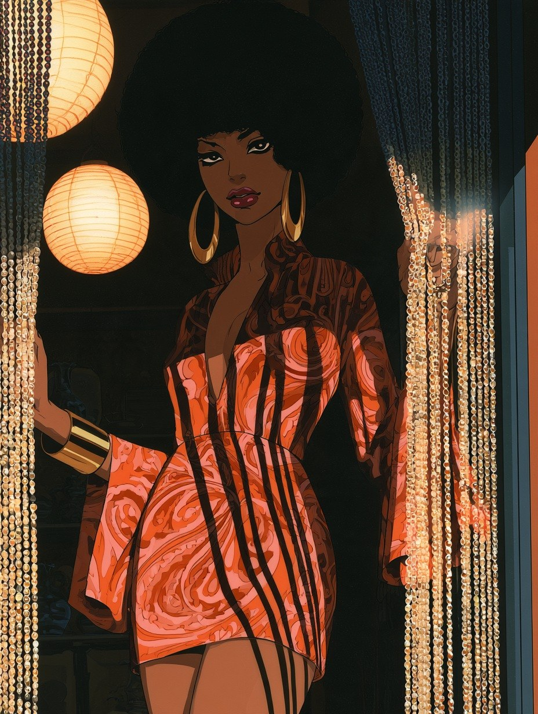
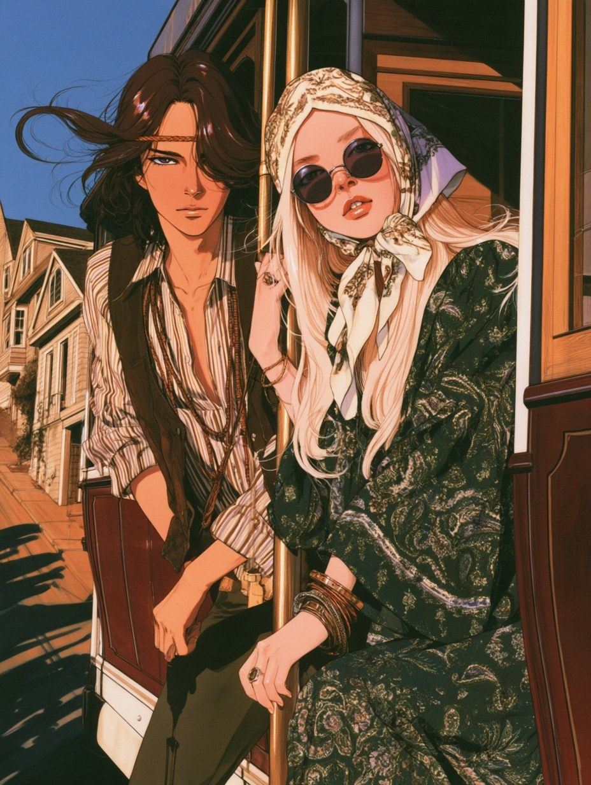
발판에 서서 언덕을 오르다
케이블카가 가파른 언덕을 오른다. 둘은 바깥 발판에 서서 놋쇠 기둥을 잡았다. 뒤로 나무집들이 계단처럼 내려간다.
그는 줄무늬 셔츠에 스웨이드 조끼, 머리는 바람에 날린다. 그녀는 무늬 실크 수건을 머리에 쓰고 둥근 검은 선글라스를 코끝에 걸쳤다. 드레스는 짙은 초록 페이즐리, 팔에는 팔찌 여러 개.
- HIM
- 줄무늬 셔츠, 스웨이드 조끼
- HER
- 초록 페이즐리 긴 드레스
- HEAD
- 머릿수건, 둥근 검은 선글라스
- WRISTS
- 겹쳐 찬 팔찌
뺨에 데이지를 그리다
술 달린 갓을 쓴 등불 아래 화장대. 둥근 거울 속에서 그녀가 가는 붓으로 뺨에 데이지를 그린다. 탁자에는 작은 물감 그릇들이 놓였다.
머리는 높이 올려 무늬 실크 스카프로 묶었다. 붉은 실크 가운은 어깨에서 흘러내린다. 표지의 그 뺨 그림은 이렇게 그린다.
- ROBE
- 자수 놓인 붉은 실크 가운
- HAIR
- 스카프로 올려 묶은 머리
- CHEEK
- 붓으로 그린 데이지
- ON THE TABLE
- 물감 그릇, 향수병, 진주
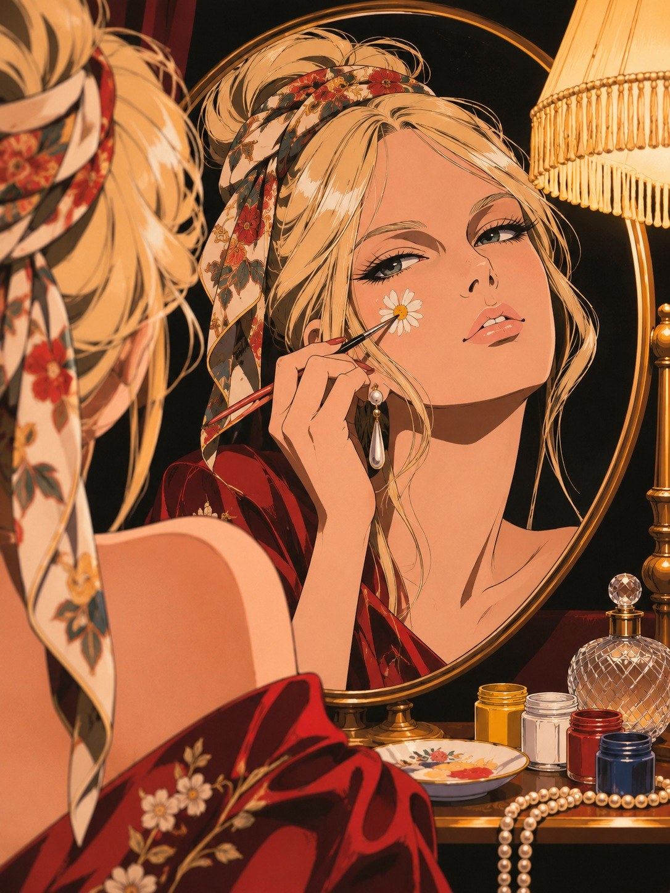
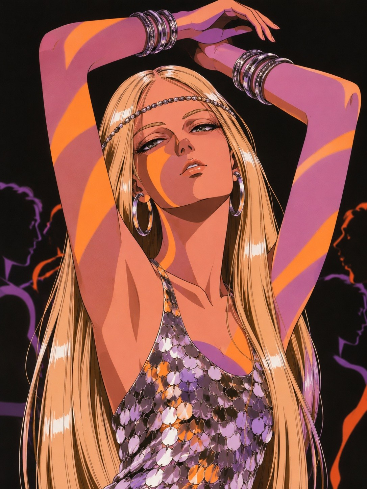
은빛 원반이 빛을 받는다
무도장은 어둡고, 색 빛이 사람들 위를 천천히 흘러간다. 그녀는 두 팔을 머리 위로 올리고 눈을 반쯤 감았다. 주황과 보라가 팔과 얼굴 위를 지나간다.
밤에는 머리를 곧게 펴고 이마에 구슬 띠를 두른다. 드레스는 작은 은빛 원반을 이어 만들어, 움직일 때마다 빛을 튕긴다. 팔목에는 팔찌를 겹겹이 찼다.
- DRESS
- 은빛 원반을 이은 미니 드레스
- HEAD
- 이마에 두른 구슬 띠
- EARRINGS
- 큰 은 고리
- WRISTS
- 겹쳐 찬 팔찌
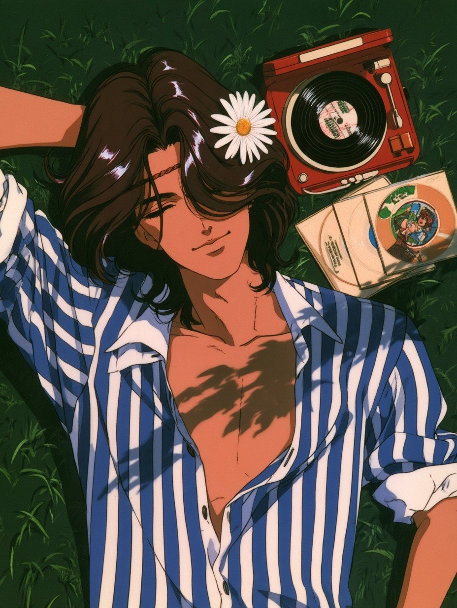
풀밭으로 들고 나가는 전축.
건전지 네 개면 오후 내내.
The Wardrobe
- Issue
- No.08 · 샌프란시스코 특파호
June 1967, printed in Seoul 1985 - Locations
- 침실 · 포스터 가게 · 바닷가 도로 · 태평양 · 무도장 · 골든게이트 공원 · 헤이트 거리 · 케이블카
- Layout
- 두 쪽을 펼친 잡지 지면. 물결치는 제목 글씨와 접어 넣은 포스터
- Special pages
- 포스터 속 밴드와 무도장, 광고 속 상품은 모두 지어낸 것
- Produced by
- Concept, Styling & Art Direction — KIM SOY
Illustrations — AI 생성 이미지
ÉPOQUE의 시간 여행은 다음 호에 계속됩니다.